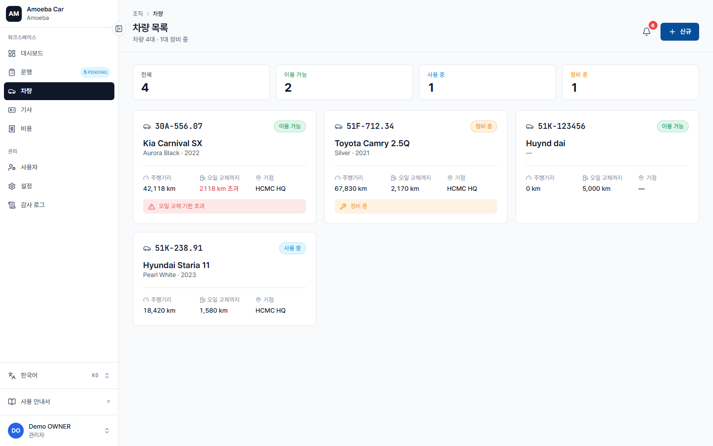
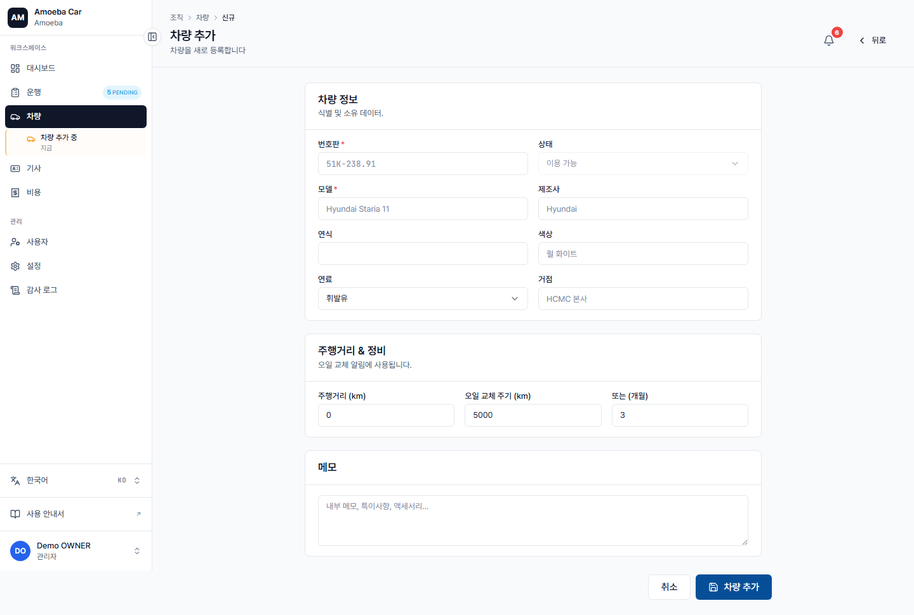
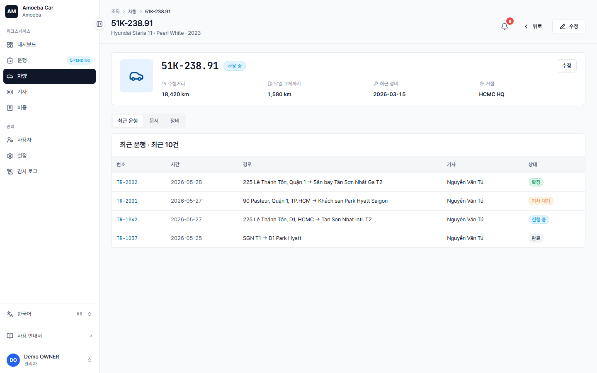

차량 관리 — 등록, 수정, 관리
- URL
/vehicles(목록) ·/vehicles/new(새로 만들기) ·/vehicles/[id](상세)- 권한
- 관리자 + 매니저: 생성 + 수정 가능. 기사: 접근 불가.
- 소프트 삭제
- 삭제 버튼 없음 — 상태를
RETIRED로 변경하여 '차량 제외'
차량 목록

각 차량 카드에 표시되는 정보:
- 번호판 (고정폭 글꼴) + 상태 레이블
- 모델 + 연식 + 색상
- 현재 주행거리
- 오일 교환까지 (다음 교환 주기까지 남은 km) — 기한 초과 시 빨간색
- 주차 위치 (홈베이스)
- 경고 배너 —
오일 교환 기한 초과또는정비 중인 경우 표시
새 차량 추가

1
우측 상단 "+ 새로 만들기" 버튼 클릭.
2
필수 항목 입력:
- 번호판 — 차량 번호 형식 (예:
51K-238.91) — 차량 그룹 내 고유값 필수 - 모델, 제조사, 연식, 색상
- 연료 유형: PETROL / DIESEL / HYBRID / EV
- 현재 주행거리 (주행거리계) — 차량 계기판에서 확인
3
정비 설정 (선택 사항, 기본값 그대로 사용 가능):
- 엔진오일 교환 주기 (km) — 기본값 5,000 km
- 엔진오일 교환 주기 (개월) — 기본값 3개월
- 최근 오일 교환일 — 교환 날짜 + 교환 시 주행거리
4
"저장" 클릭. 차량이 AVAILABLE 상태로 목록에 추가됩니다.
차량 상세 — 3개 탭

| 탭 | 내용 |
|---|---|
| 운행 내역 | 해당 차량의 최근 10건 운행 목록 — 클릭 시 상세 보기 |
| 서류 | (P5) 차량 등록증, 보험증권, 정기검사증 업로드 — 현재 준비 중 |
| 정비 | (P4) 오일 교환 이력 + 정기검사 이력 — 자세한 내용은 정비 알림 페이지 참고 |
차량 상태 변경
| 상태 | 사용 시점 |
|---|---|
AVAILABLE | 운행 배정 가능한 상태 |
IN_USE | 운행 중 — 기사가 "시작" 버튼을 누르면 시스템이 자동 변경 |
MAINTENANCE | 정비 중 — 새 운행 배정 불가 |
RETIRED | 폐차/처분 — 이력은 유지되지만 차량 선택 드롭다운에서 숨김 |
⚠️
MAINTENANCE로 변경 시 사전 확인이 실행됩니다. 차량이 IN_PROGRESS 상태의 운행 중인 경우 시스템이 변경을 차단합니다 (갑작스러운 운행 취소 방지).